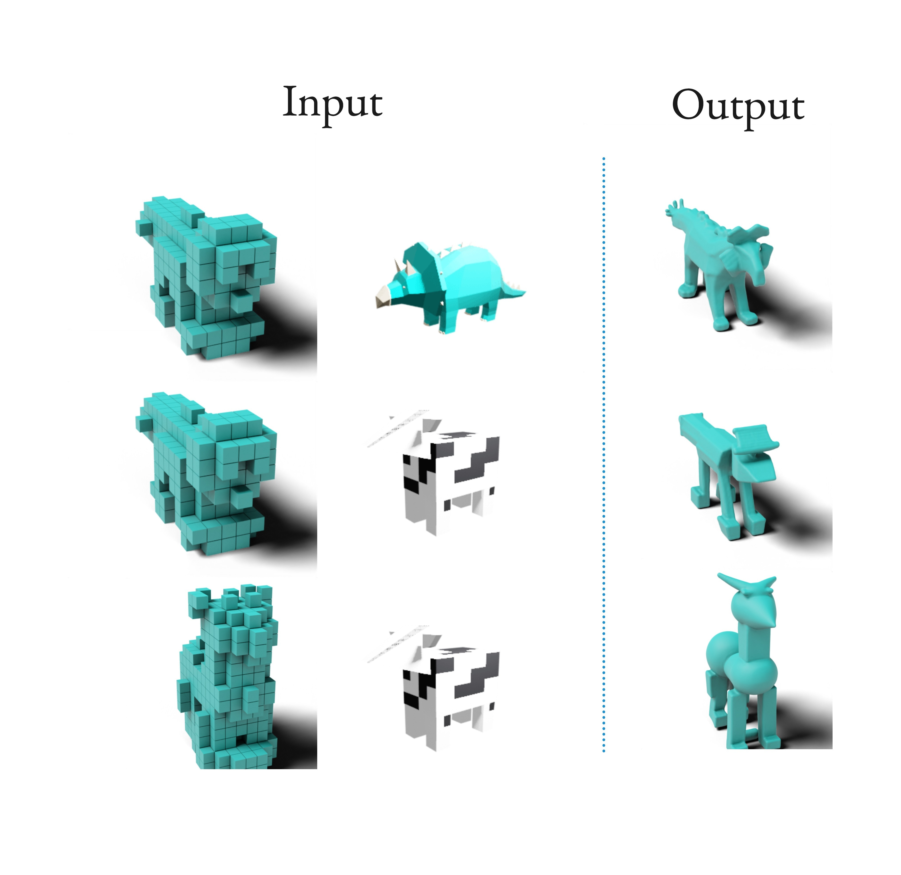
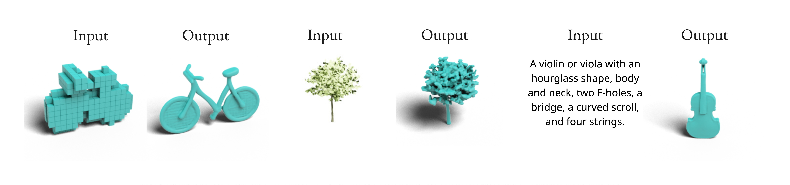

ICML rebuttal visual results
1. Comparison with MVAR

We ran a small qualitative comparison between our model and MVAR. Since MVAR is fundamentally a multi-view generation model, we used Trellis pipeline to reconstruct the meshes from multi-views.
2. OOD condition mismatch

We intentionally mismatch the input conditions by combining voxels from one object with an image from another, creating an out-of-distribution setting since training uses matched voxel-image pairs. In row 1, dog voxels paired with a dinosaur image produce a dog with dinosaur-like scales. In row 2, the same dog voxels paired with a cubic cow image generate a cubic-styled dog. Similarly, in row 3, cat voxels combined with the cubic cow image produce a cubic-styled cat. These results show that our framework handles condition mismatch and naturally supports style transfer.
3. Failure cases

For some conditions, the model fails to capture exact details, such as the bicycle wheel details in columns 1-2. It also struggles to model very high-frequency details due to resolution limits, such as the leaves of the tree in columns 3-4. In some cases, it also misses text-related details, such as the four missing strings on the violin in columns 5-6.